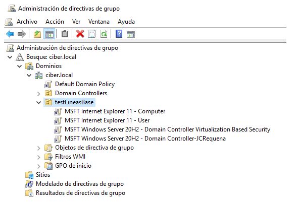

UT04. Fortificación de equipos: Línea base
UT4. Fortificación de equipos: Línea base
|

|
|
|
Ciberseguridad en entornos de las tecnología de la información. Curso 2022-23. |
Obra publicada con Licencia Creative Commons Reconocimiento No comercial Compartir igual 4.0